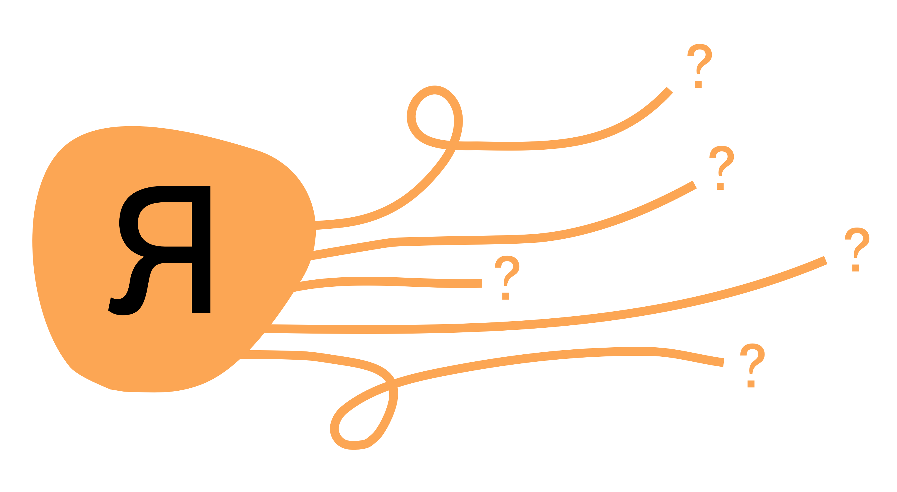
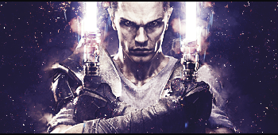
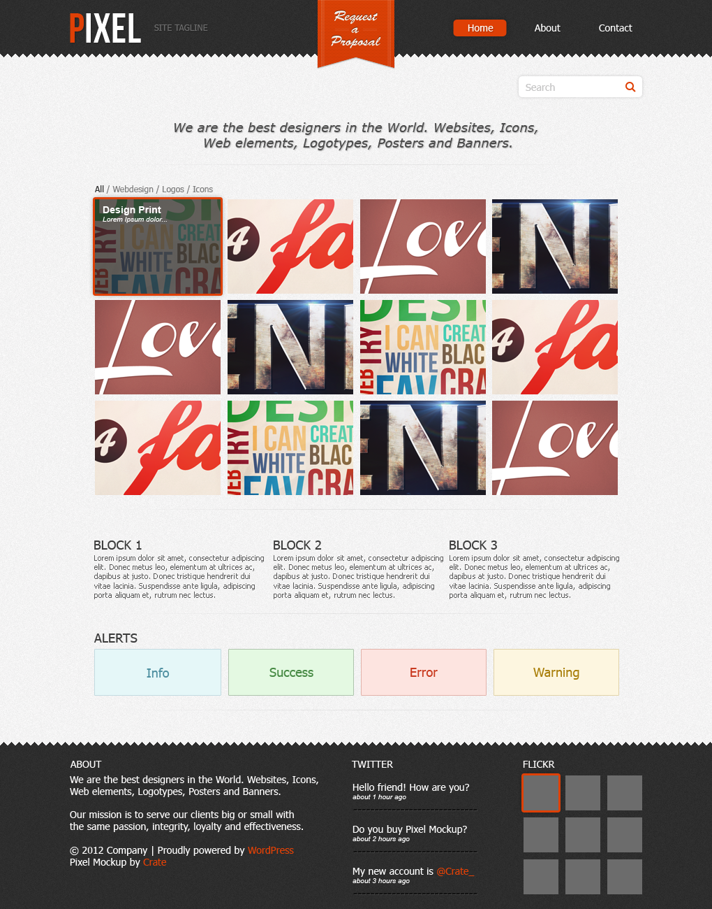

Статья #1
Белорусский Государственный Технологический Университет
Как стать дизайнером интерфейсов? Часть 1.
Советы для новичков и опытных дизайнеров
Никита Левченко (@yoursweetacid)
Эта статья для новичков. Ресурсов из статьи хватит, чтобы вырасти до стажера-дизайнера, если практиковаться самостоятельно. Статья отвечает на вопрос «Я хочу стать дизайнером интерфейсов. Что мне делать?»
Главы статьи разбиты как раз на уровни погружения в профессию. Сначала вы разбираетесь, что это за дизайн интерфейсов такой, потом пробуете что-то сделать сами, а затем пытаетесь принести пользу с помощью дизайна. На последнем этапе нужно пытаться попасть в компанию: в студию, агенство или продукт и продолжить свой путь уже там. Потому что опыт — это наше всё.
Моя история
Трогать фотошоп я начал в 2010. Делал не интерфейсы, не веб-дизайн, а всякую мелкую графику для форумов: сиги, гигабары — старички вспомнят. Источником знаний были текстовые и видеоуроки, в основном, по Фотошопу и Иллюстратору. Тогда еще мое информационное поле не было набито интерфейсами, а только наполнялось разными инструментальными навыками, например, эффектами в Фотошопе.
Через какое-то время я начал пробовать перерисовывать сайты в Фотошопе. Получалось изучить простую сетку. Параллельно мне стала нравиться веб-разработка: круто, когда ты можешь сделать сайт от начала до конца без помощи других людей. Так я начал пилить разные сайтики в Фотошопе, а потом верстать их в Дримвивере и натягивать на пхп.

В те времена я не знал про курсы по дизайну интерфейсов: возможно их не было, возможно они были, но
далеко. Поэтому в статье не будет ссылок на платные курсы, потому что я никакие не проходил и не могу за
что-то ручаться.
Иногда брал заказы на фрилансе: бывало, нужно сделать логотип, а пару раз даже рисовал сайты.
А в 2014 меня взяли на стажировку в Ракетную фирму. Написал ребятам, выполнил тестовое задание и мне
предложили работу внештатным дизайнером. В компании занимался внутренними интерфейсами для интранета,
CRM-систем и отдела СММ. В команде был арт-директор и ведущий дизайнер, которые помогали мне доводить
интерфейс до качества. У них я научился проектированию интерфейсов, простому дизайн-процессу и передаче
макетов в разработку.
Знаю, что такое дизайн
Навыки: пока никаких.
Дизайн интерфейсов — это процесс создания средств взаимодействия людей и объектов. Объектом может быть
программа, компьютер, устройство, даже дверь. Например, компьютер «говорит» на языке единиц и нолей, а
человек это все не понимает и хочет просто найти рецепт печенек. Дизайнер должен создать такой
интерфейс, чтобы человек смог в нем легко разобраться и выполнить свою задачу (найти рецепт), а
компьютер его понял и выдал результат без ошибок.
Первое, что понимают новички в дизайне, это то, что дизайн — решение задач. Если искусство пытается
что-то донести, вызвать чувства в контексте, то в дизайне это уходит на второй план (в интерфейсном
сильнее, в графическом меньше). В первую очередь дизайнер рассматривает задачу, которая стоит перед
пользователем, контекст вокруг (среда, привычки) и ограничения, которые накладывает платформа, текущее
развитие технологий, а также ресурсы остальной команды. Я верю, что смысл определяет форму.
Литература:
- Лекция Ильи Бирмана «Что такое интерфейс». Определение интерфейса, знакомство с КПД и отношением к интерфейсу «Интерфейс — зло»;
- 019. Дизайн интерфейсов — Константин Горский. Рассказ Кости про дизайн для разработчиков. Про дизайн, дизайнеров и взаимодействие;
- Беседа с Костей Горским. Еще одно видео от Кости. Отличие дизайна от искусства, задачи, работу, как развиваться;
- 100 лет дизайна от Bang Bang Education. Прекрасное видео про историю дизайна. Известные российские дизайнеры рассказывают про становление дизайна в России;
- Все люди — дизайнеры. Дизайн вокруг нас и мы все так или иначе принимаем дизайнерские решения;
- 001. Школа дизайна — Введение. Тарас Шаров и Лола Кристаллинская. Видение дизайна работников Яндекса в технологических компаниях. Помогает проникнуться миром известных компаний.
Также, посмотрите как создают интерфейсы известные компании и люди: Студия Right, Агенство SFCD, Ony,
BuroBuro, Студия Артемия Лебедева, Бюро Артема Горбунова, Илья Бирман, Данила Ковчий. Делать на уровне
сразу не получится, но взять как ориентир и стремиться — хороший план.
Посещайте локальные митапы и конференции в вашем городе. Это вообще лучший способ погрузиться в
профессию. Если у вас город более-менее большой, то наверняка дизайн-студии или компании периодически
проводят встречи дизайнеров, которые делятся мыслями в виде простых докладов. Сможете посмотреть как на
студии, так и на людей.
Подпишитесь на каких-нибудь дизайнеров, которые вам нравятся. Телеграм-каналы, сайты, блоги, фб — там
обычно пишут про рабочие моменты, делятся новостями. Работает как неплохой способ быть в контексте
индустрии.
Если через пару недель вам не стало скучно и вы все еще хотите научиться в дизайн, то следующий шаг —
попробовать что-то нарисовать.
Могу что-то нарисовать
Навыки: типографика и верстка, графический редактор.
Когда вы познакомились с дизайном и решили, что все-таки будете в нем разбираться, нужно начать что-то
делать. Для этого вам понадобятся базовые инструменты: типографика, потому что интерфейсы состоят из
текстов; верстка для расположения и компоновки элементов; графический редактор, чтобы быть способным
собирать макеты.
Мейнстримными графическими редакторами являются Sketch и Figma. Скетч все еще стандарт для индустрии, но
многие команды постепенно переходят на Фигму.
Литература:
- Типографика и верстка. Артем Горбунов. Основа дизайна интерфейсов — правила типографики и верстки, потому что мобилки перекочевали из веба, а веб из печатной продукции;
- Подборка советов «Типографика и верстка». Бесплатная версия упомянутой книги в виде нескольких советов-статей на сайте Бюро;
- Дизайн-альманах Readymag. Подробные статьи про типографику, сетку, цвета и анимацию. Если последнее на этом уровне не так важно, то первые три темы будут очень полезны;
- Графический интерфейс. Данила Ковчий. Достаточно абстрактная, но не менее интересная статья про системный подход к разработке интерфейсов;
- Sketch App — Вводный курс. Первый попавшийся под руку видеокурс по Скетчу. Не смог найти никаких уроков за 2019 год, хотя Скетч сильно изменился в последних версиях. Но для понимания что происходит и как сделать базовые вещи — пойдет;
- Figma Guide. Саша Окунев. Саша написал подробную книгу про Фигму, которой хватит, чтобы погрузиться в инструмент и начать в нем что-то рисовать.
Сейчас нужно научиться делать что-то руками. Не важно, получится ли что-то полезное, главное —
процесс.
Уроки по инструментам. Берем литературу по Скетчу или Фигме и пробуем все инструменты. Советовать
какой-то редактор нет смысла — если есть возможность, попробуйте оба и решите, какой вам нравится
больше.
Копирование чужого дизайна. Возьмите какой-нибудь сайт или приложение, вставьте скриншот в
графический
редактор и попробуйте нарисовать такой же интерфейс поверх. То есть, повторите полностью картинку. Через
пару таких упражнений сможете видеть систему, по которой построены интерфейсы и научитесь работать в
выбранном графическом редакторе.
Поиск вдохновения. Для поиска вдохновения и прокачки вкуса отлично подходит дрибл и биханс.
Больше в
визуальном плане, потому что интерфейсы там обычно как концепт-кары — выглядят красиво, но не для
повседневной езды.
Чем больше рисуете — тем быстрее рисуете. На этом этапе нужно поиграться с инструментами, выбрать
подходящий для своих задач, наработать руку и быть в состоянии что-то сделать. Короче, отвечаете на
вопрос «Как?».
Заключение
Продолжение статьи в следующем выпуске издания.
Если у вас есть вопросы — пишите, я обязательно отвечу.
Telegram
Не забудьте посмотреть мое портфолио:
Dribbble, Behance и мой личный сайт:
yoursweetacid.space
Спасибо за внимание!
Читайте вторую часть статьи:
Как стать дизайнером интерфейсов
Часть 2. Эта статья для новичков. Ресурсов из статьи хватит, чтобы вырасти до стажера-дизайнера, если практиковаться самостоятельно. Статья отвечает на вопрос «Я хочу стать дизайнером интерфейсов. Что мне делать?».

Никита Левченко